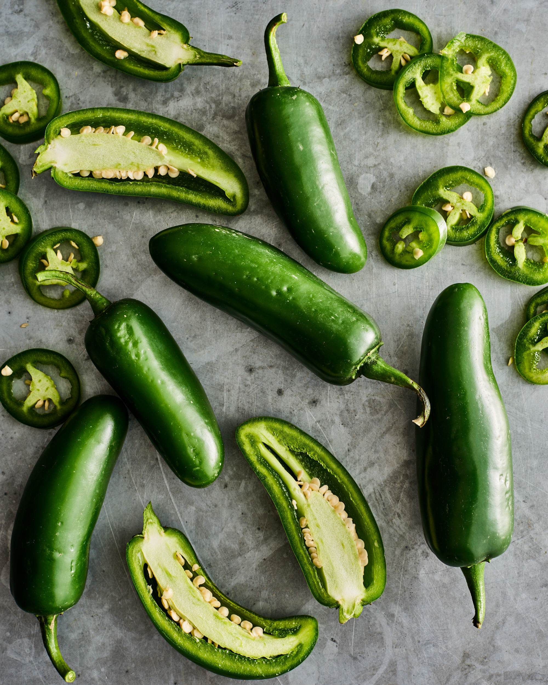

Queso is a warm and delicious chip dip.
You can really use whatever kind of cheese you want.

If you would like your queso to be less spicy, you can remove the seeds from the jalapenos.
Servings
4
Ingredients
- 1 Block of cheese
- 2 jalepenos
- 0.5 onion
- 1 lime
- 0.33 cup cilantro
- 1 tsp of salt
- 1 clove garlic
- 2 Tbsp butter
Instructions
- Chop up the onions, jalepenos and garlic
- Melt the butter on medium heat in a pan
- Sautee the onions, jalepenos, and garlic in the butter until fragrant
- Slowly add in the cheese, stirring until melted
- Add the rest of the ingredients